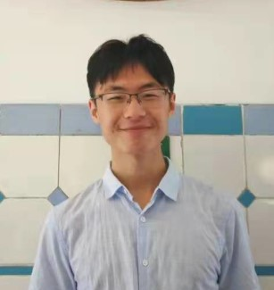

当前智能范式的边界在哪里？
当前范式有哪些本质上无法解决的问题？模型又如何实现自我进化？这是我新的、也是最大的兴趣所在—— 目前还只有一些综述与线索（相关探索：EvoTrainer）。

研究员 (Researcher) · Alibaba AIDATA | 提问者 · 探索者 · 构建者
我做评测与数据——把真实世界中复杂、长程、需与环境交互的任务，抽象为可复现的评测题目，用它定义模型与 Agent 的能力边界，再用高质量数据去拓展这条边界。
专注基础模型的 Agentic & Coding 评测与数据，并在探索下一代智能范式。
我是 Alibaba 的研究员，专注基础模型的 Agentic & Coding 评测与数据。
我相信：能被清晰定义和验证的问题，才能被真正解决。评测不只是业务指标， 更是 AI 发展的方向盘——它决定我们朝哪里前进，以及如何判断自己是否在前进。
我也相信：数据之于 AI，如同人生经历之于人类——智能不会从垃圾堆里涌现，高质量的数据决定了高质量的智能。 我的工作，就是把真实而复杂的用户任务抽象、采样为可复现的评测，观测与定义能力边界，再通过构造高质量训练数据去拓展它。
当前范式有哪些本质上无法解决的问题？模型又如何实现自我进化？这是我新的、也是最大的兴趣所在—— 目前还只有一些综述与线索（相关探索：EvoTrainer）。
现实中的软件工程远不止“功能正确”。我关注 Agent 在真实代码库上的长程能力， 以及架构与风格一致性、可读性、可维护性等非功能性指标，并把它拓展到视觉/前端，以及医疗、法律、金融等更广的领域。
当多个智能体协作，沟通与推理该如何组织？Multi-Agent 是否也存在属于它自己的“人月神话”？ 我关注多智能体推理中的通信与协同。
首个用持续集成（CI）信号评测 Agent 维护真实代码库能力的基准；揭示了多轮迭代下智能体频繁回退的真实痛点。（共一）
多智能体推理中的流式通信，让协作的沟通代价不抵消多智能体带来的收益。（通讯）
让 LLM 策略与训练环境协同进化，迈向自主的 agentic 强化学习——指向“自我进化”。
对 Humanity's Last Exam 做系统化校验与结构化修订，提升前沿能力评测的可信度。
代码 Agent 的训练中，轨迹的多样性比单纯的数量更关键。
在开放的 agentic 学习生态中构建 ROME 模型的技术报告。（Core Contributor，负责评测与标注数据）
开源评测： terminal-bench-pro · QwenClawBench · 其他：V-GameGym、MAS-Algorithm · 论文署名 Xander Xu / Xiang Xu。